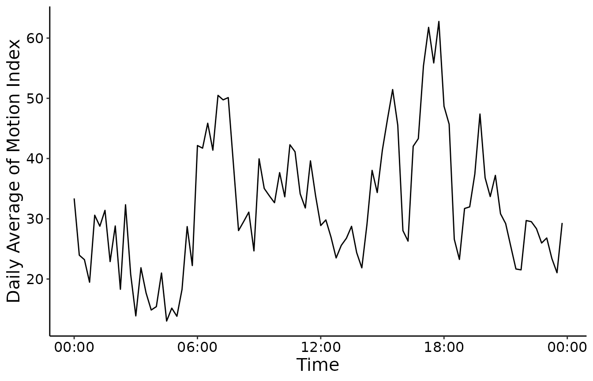
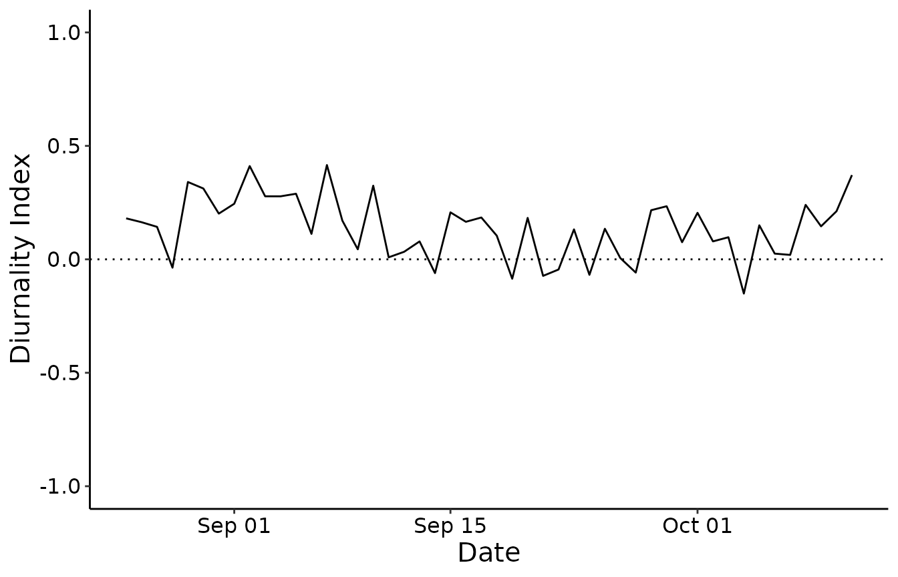

Visualizing actograms, average activity and diurnality index
Hassan-Roland Nasser and Marie Schneider
2024-11-17
Actgram_diurnality_avg_activity.RmdThe three most commonly used tools to perform a first inspection on activity data are:
Actograms: These are 2D graphs that show tiled (15 min per tile) activity during 24h period over several days. These graphs are useful to visualize daily cycles of activities. In actograms, the x-axis represent the day time, the y-axis represent the day and the intensity of the colors represents the activity amplitude.
Average activity plots: These graphs show the average (arithmetic mean) activity for a specific moment of the day. The average is done over all days taking one data point from each day and averaging all the values.
Diurnality index: This type of graphs show whether the activity tends to be more diurnal or nocturnal. In another word, this shows whether the subject of the study is more active during the day or during the night. The value ranges from -1 to +1. Whereas -1 means a completely nocturnal activity and +1 means a comletely diurnal activity. Animal’s result with balanced day and night activity is 0.
We start by loading a dataset from the library digiRhythm, we then remove the outliers and resample it to 15 min. We choose one activity to study.
library(digiRhythm)
data <- digiRhythm::df691b_1
data <- remove_activity_outliers(data)
data <- resample_dgm(data, 15)
activity <- names(data)[2]
head(data)
#> datetime Motion.Index Steps
#> 1 2020-08-25 00:00:00 20 8
#> 2 2020-08-25 00:15:00 52 46
#> 3 2020-08-25 00:30:00 61 39
#> 4 2020-08-25 00:45:00 29 18
#> 5 2020-08-25 01:00:00 83 26
#> 6 2020-08-25 01:15:00 50 23Actograms
We then proceed to plot the actogram of the activity. We can choose the start and end date of the actogram. We can also choose an alias for the activity. This alias is used for aesthetics purpose in the plots. For instance, if the name of the activity column is motion.index, we don’t probably want to show this string in the plot’s legend, but rather have it coded properly as ‘Motion Index’. The actogram function also offers the possibility to save the graph directly in a path as shown in the commented line below. Users only provide the path (relative or physical) without the file name ignoring the extension. All pictures in digiRhythm are saved with the tiff format as it’s the most widely used extension for scientific publications.
User have the possibility to save the plot with another extension or configuration simply by saving the actogram object in a variable (which is a ggplot object) and control it as they wish to. User could additionally use this actogram object to work on the calculated data.
start <- "2020-08-25" # year-month-day
end <- "2020-10-11" # year-month-day -->
activity_alias <- "Motion Index"
# save <- 'sample_results/actogram' #if NULL, don't save the image
my_actogram <- actogram(data, activity, activity_alias, start, end, save = NULL)
Average Activity
Now, we plot the average activity. We follow the same dataframe and same logic like for the actograms. And user could use the resulted object as the actogram object.
start <- "2020-08-25" # year-month-day
end <- "2020-10-11" # year-month-day -->
activity_alias <- "Motion Index"
# save <- 'sample_results/actogram' #if NULL, don't save the image
my_daa <- daily_average_activity(data, activity,
activity_alias,
start,
end,
save = NULL
)
Diurnality Index
The diurnality index could be computed and plotted using the diurnality function as follows. The user has the opportunity to change day- and night-time. The default daytime is 06:30 to 16:30. Default night-time occurred from 18:00 to 05:00. The user can adapt the time to lighttime or exclude some management times of the animals. Management times are periods when humans influence the activity of the animal, so that it is not possible to realize their own activity (for excample milking time in dairy cows). As the actogram function it offers the possibility to save the graph directly or using the ggplot object to configurate a different plot or work on the calculated data.
day_time <- c("06:30:00", "16:30:00")
night_time <- c("18:00:00", "T05:00:00")
my_di <- diurnality(data, activity, day_time, night_time, save = NULL)